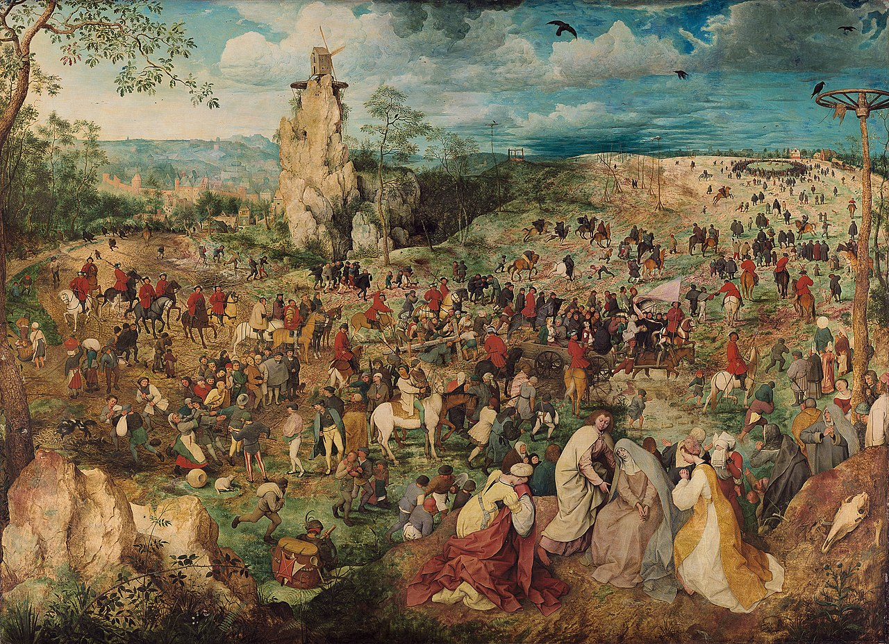
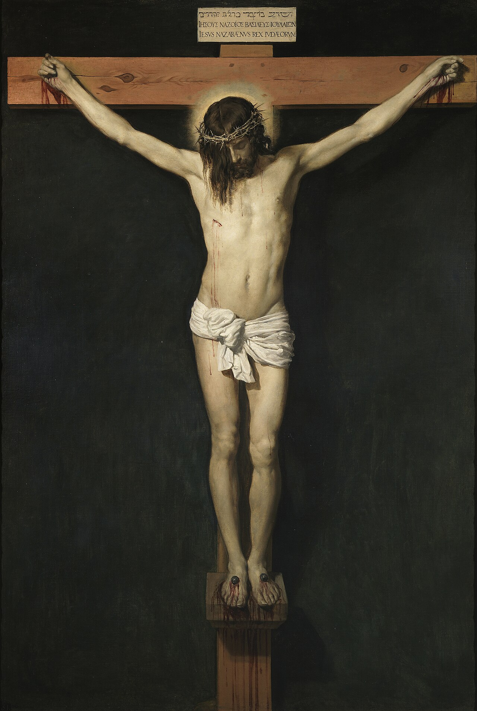

Novena a Nuestra Señora de los DoloresPara conocer y llorar los propios pecados
Para implorar, por intercesión de la Madre Dolorosa, la gracia de conocer los pecados, fallas y vicios ocultos del alma, crecer en contrición y humildad, y alcanzar una firme enmienda de vida
✦
Stabat Mater dolorosa, iuxta crucem lacrimosa, dum pendebat Filius.
Comenzar▼
Introducción
La Escuela del Corazón Traspasado
✦
Entre todas las devociones que la Iglesia ha custodiado a lo largo de los siglos, pocas son tan antiguas, tan sobrias y tan fecundas como la devoción a los Dolores de la Santísima Virgen María.
No es una devoción triste, aunque contemple el dolor; ni sentimental, aunque hable al corazón. Es la contemplación, sostenida y amorosa, de aquella Madre que permaneció de pie junto a la Cruz cuando todo parecía perdido, y cuya alma fue atravesada —según la profecía del anciano Simeón— por una espada de dolor. La Iglesia la honra bajo este título desde hace siglos: los hijos de San Felipe Benicio y los Siervos de María propagaron el rezo de los Siete Dolores, y la fiesta de Nuestra Señora de los Dolores quedó fijada en el calendario el 15 de septiembre, al día siguiente de la Exaltación de la Santa Cruz, porque no hay Cruz sin Madre al pie de ella.
¿Por qué acudir precisamente a la Dolorosa para pedir luz sobre los propios pecados? Porque nadie ha visto como ella lo que el pecado es y lo que el pecado hace. Los santos enseñan que María, al pie de la Cruz, contempló en la carne de su Hijo el estrago de todos los pecados del mundo —también de los nuestros, también de los más secretos—. Ella conoce el pecado no por haberlo cometido, sino por haberlo llorado; y por eso puede alcanzarnos la gracia más difícil de todas: ver la verdad sobre nosotros mismos sin desesperar, porque la vio siempre bañada en la sangre redentora.
¿Quién advierte sus propios yerros? Purifícame, Señor, de las faltas que me están ocultas.
Salmo 18, 13 — Ab occultis meis munda me
Ésta es la petición que sostiene toda la novena. Hay pecados que conocemos y confesamos; pero hay también miserias que no vemos: apegos desordenados que llamamos costumbres, orgullo que llamamos carácter, tibieza que llamamos prudencia, vicios que se esconden detrás de virtudes aparentes. El alma que no pide luz acaba creyendo su propia versión de sí misma. Por eso vamos a la Madre: para que nos mire con aquellos ojos que vieron la Pasión, y nos obtenga del Espíritu Santo el don santísimo del conocimiento propio, que según todos los maestros de la vida espiritual es la puerta de la humildad, y la humildad la puerta de toda conversión verdadera.
San Agustín — Soliloquios
Noverim me, noverim Te: que me conozca, Señor, y que te conozca a Ti. Que me conozca para humillarme; que te conozca para amarte.
Disposiciones
Cómo Conviene Rezar esta Novena
✦
Una novena no es una fórmula que obra por sí sola: es nueve días de audiencia ante la Madre de Dios. Lo que se pide aquí —ver el propio pecado— es una gracia grande, y las gracias grandes piden disposiciones serias. Conviene, pues, rezarla así:
Con recogimiento
Buscar cada día un momento de silencio, a ser posible a la misma hora y en el mismo lugar, ante una imagen de la Dolorosa o un crucifijo, y si se puede, ante el Santísimo Sacramento. Rezar despacio: la prisa es enemiga de la luz.
Con examen de conciencia
Dedicar unos minutos, al terminar el rezo de cada día, a examinar la conciencia sobre la materia del día. No para atormentarse, sino para dejar que la luz pedida empiece a obrar.
Con propósito de confesión
Ordenar la novena hacia una buena confesión sacramental, durante los nueve días o al terminarlos. Lo que la luz descubra, el sacramento lo perdona: ése es el término natural de este camino.
Con confianza y constancia
Sin escrúpulo y sin desaliento. Si un día se omite, se retoma al siguiente sin turbación. Dios no desprecia jamás un corazón que lo busca con humildad y perseverancia.
Cada día de la novena está completo en sí mismo: basta abrir el día que corresponde y rezarlo de principio a fin. La estructura es siempre la misma: oración inicial e intención fija, contemplación del dolor del día, meditación, intención particular, oración del día, y los rezos finales —un Padrenuestro, siete Avemarías en honor de los Siete Dolores, un Gloria y la jaculatoria—. Quien no pueda rezar las siete Avemarías, rece al menos tres: la Virgen mira más el corazón que la cuenta.
Para todos los días
Oración Inicial
Se reza al comenzar cada uno de los nueve días
✦
Por la señal de la Santa Cruz, de nuestros enemigos líbranos, Señor, Dios nuestro. En el nombre del Padre, y del Hijo, y del Espíritu Santo. Amén.
Virgen Santísima de los Dolores, Madre fiel que permaneciste de pie junto a la Cruz de tu Hijo:
vengo a tus plantas durante estos nueve días para alcanzar de Dios, por tu poderosa intercesión, la gracia de conocer mis pecados, mis fallas y mis miserias ocultas, y la gracia mayor de llorarlas y enmendarlas.
Alcánzame del Espíritu Santo un rayo de su luz, para que vea mi alma como Dios la ve; un golpe de su gracia, para que mi corazón se quebrante de dolor por haber ofendido a tan buen Padre; y una esperanza firme e inquebrantable, porque sé que quien me muestra la herida es el mismo que quiere sanarla.
Madre Dolorosa: por la espada que atravesó tu alma, no permitas que yo viva engañado sobre mí mismo, ni muera sin haber llorado mis pecados.
Por Jesucristo, tu Hijo, nuestro Señor.Amén
Para todos los días
Intención Especial de la Novena
Se renueva cada día, después de la oración inicial
✦
Intención que se pide durante toda la novena
Virgen Santísima de los Dolores: por los méritos de la Pasión de tu Hijo y por la espada que traspasó tu corazón, alcánzame estas cinco gracias:
Luz, para conocer mis pecados, mis apegos desordenados y mis vicios ocultos, y descubrir cuanto hay en mí que todavía ofende a Dios.
Humildad, para reconocerlos sin excusas, sin disimulos y sin engañarme a mí mismo.
Dolor, para llorarlos con verdadera contrición, más por amor a Dios que por temor del castigo.
Fortaleza, para corregirme con obras, confesarme con sinceridad y emprender una firme enmienda de vida.
Confianza, para no caer ni en el escrúpulo ni en la desesperación, sabiendo que Dios no desprecia un corazón contrito y humillado. Amén.
🗡 Día Primero · Primer Dolor
Día I
La Profecía de Simeón
Primer Dolor de la Santísima Virgen
✦
Primer Dolor · La Profecía de Simeón
«Y a ti misma una espada te atravesará el alma» — Lucas 2, 35
Para comenzar — como todos los días
Señal de la Cruz
Por la señal de la Santa Cruz, de nuestros enemigos líbranos, Señor, Dios nuestro. En el nombre del Padre, y del Hijo, y del Espíritu Santo. Amén.
Oración inicial
Virgen Santísima de los Dolores, Madre fiel que permaneciste de pie junto a la Cruz de tu Hijo: vengo a tus plantas durante estos nueve días para alcanzar de Dios, por tu poderosa intercesión, la gracia de conocer mis pecados, mis fallas y mis miserias ocultas, y la gracia mayor de llorarlas y enmendarlas. Alcánzame del Espíritu Santo un rayo de su luz, para que vea mi alma como Dios la ve; un golpe de su gracia, para que mi corazón se quebrante de dolor por haber ofendido a tan buen Padre; y una esperanza firme e inquebrantable, porque sé que quien me muestra la herida es el mismo que quiere sanarla. Madre Dolorosa: por la espada que atravesó tu alma, no permitas que yo viva engañado sobre mí mismo, ni muera sin haber llorado mis pecados. Por Jesucristo, tu Hijo, nuestro Señor. Amén.
Renovación de la intención
Renuevo, Madre, la intención de toda esta novena: luz para conocer mis pecados y vicios ocultos, humildad para reconocerlos, dolor para llorarlos, fortaleza para enmendarme, y confianza inquebrantable en la misericordia de Dios. Amén.
Dolor que se contempla
María presenta al Niño en el Templo, y oye de labios del anciano Simeón que su Hijo será signo de contradicción, y que una espada de dolor atravesará su propia alma.
Cuarenta días después de Belén, la Madre sube al Templo con el Niño en brazos, para cumplir la ley y ofrecer al Señor su primogénito. Es un día de luz: el anciano Simeón, que esperaba el consuelo de Israel, recibe en sus brazos al Mesías y bendice a Dios porque sus ojos han visto la salvación. Y entonces, en medio de aquella alegría, el profeta se vuelve hacia la Madre, y pronuncia la primera profecía de la Pasión.
Éste está puesto para caída y elevación de muchos en Israel, y para ser señal de contradicción —y a ti misma una espada te atravesará el alma—, a fin de que queden al descubierto los pensamientos de muchos corazones.
Lucas 2, 34-35
Reparemos en lo que suele pasarse por alto: la espada de María tiene un propósito. No se anuncia el dolor de la Madre como una desgracia sin sentido, sino «a fin de que queden al descubierto los pensamientos de muchos corazones». La Cruz de Cristo y la espada de su Madre son, juntas, la luz que pone de manifiesto lo que cada corazón esconde. Ante el Crucificado y la Dolorosa nadie permanece neutral: allí se revela lo que somos. Por eso esta novena comienza aquí: pedimos ser contados entre esos «muchos corazones» cuyos pensamientos quedan al descubierto —no en el último día, cuando ya no haya remedio, sino ahora, cuando todavía hay misericordia y enmienda.
María oyó la profecía y no huyó de ella. No pidió explicaciones, no se defendió de la palabra oscura: la guardó en su corazón, y vivió treinta y tres años con la espada anunciada pendiendo sobre su alma. Ella nos enseña la primera disposición del conocimiento propio: aceptar de antemano la verdad, venga cuando venga y duela lo que duela. Nosotros, en cambio, ¡cuántas veces preferimos no saber! El alma se defiende de la luz con mil razones: que no es para tanto, que todos hacen lo mismo, que ya habrá tiempo. María nunca se defendió de la verdad; por eso puede alcanzarnos la gracia de no defendernos de ella.
San Bernardo de Claraval — Sermón sobre los Dolores de la Virgen
Verdaderamente, oh Madre bendita, una espada atravesó tu alma; porque no pudo penetrar la carne de tu Hijo sin atravesar el alma de la Madre. Jesús expiró, y la lanza cruel que abrió su costado ya no tocó su alma; pero atravesó la tuya.
Intención particular del día
Pedir la gracia de no temer la verdad sobre uno mismo: aceptar de antemano, como María, todo lo que Dios quiera mostrarme de mi alma durante esta novena, sin defenderme de la luz, sin excusarme y sin huir de ella.
Virgen purísima, que al presentar en el Templo al Autor de la vida recibiste a cambio el anuncio de la espada:
alcánzame la gracia de recibir, como tú, la palabra que hiere y que salva. Tu alma fue atravesada para que quedaran al descubierto los pensamientos de los corazones: descubre, Madre, los pensamientos del mío. Pon delante de mis ojos lo que he querido no mirar; deshaz las excusas con que me defiendo; y enséñame que la luz de Dios nunca hiere para destruir, sino para sanar.
Que yo no tema saber quién soy, porque sé de quién soy hijo. Y que esta espada de la verdad, que hoy te pido, abra en mí el camino de la contrición, de la confesión y de la enmienda de mi vida.Amén
Para concluir — rezos del día
I.Un Padrenuestro, ofrecido al Padre Eterno por los méritos de la Pasión de su Hijo.
II.Siete Avemarías, una en honor de cada uno de los Siete Dolores de la Santísima Virgen (quien no pueda, rece al menos tres).
III.Un Gloria, en acción de gracias por la obra de la Redención.
Jaculatoria
«Virgen Dolorosísima, alcánzame conocer y llorar mis pecados.»
Examen breve del día
¿De qué verdad sobre mí mismo me he estado defendiendo? ¿Qué es eso que prefiero no mirar?
🗡 Día Segundo · Segundo Dolor
Día II
La Huida a Egipto
Segundo Dolor de la Santísima Virgen
✦
Segundo Dolor · La Huida a Egipto
«Levántate, toma al Niño y a su Madre, y huye a Egipto» — Mateo 2, 13
Para comenzar — como todos los días
Señal de la Cruz
Por la señal de la Santa Cruz, de nuestros enemigos líbranos, Señor, Dios nuestro. En el nombre del Padre, y del Hijo, y del Espíritu Santo. Amén.
Oración inicial
Virgen Santísima de los Dolores, Madre fiel que permaneciste de pie junto a la Cruz de tu Hijo: vengo a tus plantas durante estos nueve días para alcanzar de Dios, por tu poderosa intercesión, la gracia de conocer mis pecados, mis fallas y mis miserias ocultas, y la gracia mayor de llorarlas y enmendarlas. Alcánzame del Espíritu Santo un rayo de su luz, para que vea mi alma como Dios la ve; un golpe de su gracia, para que mi corazón se quebrante de dolor por haber ofendido a tan buen Padre; y una esperanza firme e inquebrantable, porque sé que quien me muestra la herida es el mismo que quiere sanarla. Madre Dolorosa: por la espada que atravesó tu alma, no permitas que yo viva engañado sobre mí mismo, ni muera sin haber llorado mis pecados. Por Jesucristo, tu Hijo, nuestro Señor. Amén.
Renovación de la intención
Renuevo, Madre, la intención de toda esta novena: luz para conocer mis pecados y vicios ocultos, humildad para reconocerlos, dolor para llorarlos, fortaleza para enmendarme, y confianza inquebrantable en la misericordia de Dios. Amén.
Dolor que se contempla
María, avisada por el ángel en medio de la noche, huye a Egipto con San José y el Niño, para librar a Jesús de Herodes, que lo busca para matarlo.
Apenas se han ido los Magos, la noche de Belén se llena de amenaza. Un ángel despierta a José: hay que partir ahora, sin esperar al alba, porque el rey quiere la muerte del Niño. Y la Madre se levanta en la oscuridad, envuelve a su tesoro, y emprende el camino del destierro: noches a la intemperie, un país extranjero, la pobreza de los desterrados. En sus brazos lleva al Dueño del universo, proscrito en su propio mundo.
Levántate, toma contigo al Niño y a su Madre, y huye a Egipto; y estate allí hasta que yo te diga, porque Herodes va a buscar al Niño para matarlo.
Mateo 2, 13
Herodes murió hace veinte siglos; pero su sombra no ha muerto. Cada pecado grave es un Herodes que busca al Niño para matarlo: para matar la vida de la gracia en el alma. Y los apegos desordenados reinan en nosotros como reinaba Herodes: con miedo a perder el trono. Preguntémonos hoy, delante de la Madre: ¿qué hay en mí que no quiere que Cristo reine? Los vicios ocultos rara vez se presentan con su nombre; se visten de derechos adquiridos, de gustos legítimos, de «mi manera de ser», de costumbres que «no hacen mal a nadie». Pero se les conoce por esta señal: se inquietan y se defienden cuando la gracia amenaza su dominio.
María nos enseña hoy el remedio más antiguo y más humilde de la vida espiritual: la huida. Con la tentación reconocida y con la ocasión próxima de pecado no se dialoga ni se negocia: se huye, pronto y sin mirar atrás, como José se levantó de noche sin esperar al día. Huir no es cobardía: es obediencia. Quien se cree fuerte para quedarse junto al fuego sin quemarse, ya ha empezado a arder. Pidamos hoy conocer cuáles son nuestras ocasiones de caída —los lugares, las compañías, las pantallas, las horas— y la prontitud de María para poner tierra de por medio.
San Bernardo de Claraval — Homilía «Super Missus Est»
Si se levantan los vientos de las tentaciones, si tropiezas con los escollos de las tribulaciones, mira a la estrella, invoca a María. Si la sigues, no te extravías; si le ruegas, no desesperas; si en ella piensas, no yerras. Si ella te sostiene, no caes; si ella te protege, nada temes.
Intención particular del día
Pedir la gracia de conocer mis apegos desordenados y las ocasiones próximas que me hacen caer; y la prontitud de María y de José para huir de ellas sin demora, sin negociar y sin volver la mirada.
Madre peregrina del destierro, que cruzaste el desierto de noche llevando en brazos al perseguido:
enséñame a guardar la vida de la gracia como tú guardaste al Niño. Descúbreme los Herodes que reinan en mi corazón: los apegos que temen perder su trono, los hábitos que se disfrazan de inocencia, las ocasiones que rondan mi debilidad. Y alcánzame de tu Hijo la obediencia pronta de aquella noche santa: levantarme sin tardanza, huir sin discutir, y preferir cualquier destierro antes que la muerte del alma.
Virgen fiel: que ningún pecado me parezca pequeño si entristece a Dios, y que ninguna renuncia me parezca grande si me conserva en su amistad.Amén
Para concluir — rezos del día
I.Un Padrenuestro, ofrecido al Padre Eterno por los méritos de la Pasión de su Hijo.
II.Siete Avemarías, una en honor de cada uno de los Siete Dolores de la Santísima Virgen (quien no pueda, rece al menos tres).
III.Un Gloria, en acción de gracias por la obra de la Redención.
Jaculatoria
«Madre Dolorosa, líbrame de los Herodes que reinan en mi corazón.»
Examen breve del día
¿Cuáles son las ocasiones en que casi siempre caigo? ¿Qué hago —concretamente— para evitarlas?
🗡 Día Tercero · Tercer Dolor
Día III
El Niño Jesús Perdido en el Templo
Tercer Dolor de la Santísima Virgen
✦
Tercer Dolor · El Niño Perdido en el Templo
«Tu padre y yo te buscábamos con dolor» — Lucas 2, 48
Para comenzar — como todos los días
Señal de la Cruz
Por la señal de la Santa Cruz, de nuestros enemigos líbranos, Señor, Dios nuestro. En el nombre del Padre, y del Hijo, y del Espíritu Santo. Amén.
Oración inicial
Virgen Santísima de los Dolores, Madre fiel que permaneciste de pie junto a la Cruz de tu Hijo: vengo a tus plantas durante estos nueve días para alcanzar de Dios, por tu poderosa intercesión, la gracia de conocer mis pecados, mis fallas y mis miserias ocultas, y la gracia mayor de llorarlas y enmendarlas. Alcánzame del Espíritu Santo un rayo de su luz, para que vea mi alma como Dios la ve; un golpe de su gracia, para que mi corazón se quebrante de dolor por haber ofendido a tan buen Padre; y una esperanza firme e inquebrantable, porque sé que quien me muestra la herida es el mismo que quiere sanarla. Madre Dolorosa: por la espada que atravesó tu alma, no permitas que yo viva engañado sobre mí mismo, ni muera sin haber llorado mis pecados. Por Jesucristo, tu Hijo, nuestro Señor. Amén.
Renovación de la intención
Renuevo, Madre, la intención de toda esta novena: luz para conocer mis pecados y vicios ocultos, humildad para reconocerlos, dolor para llorarlos, fortaleza para enmendarme, y confianza inquebrantable en la misericordia de Dios. Amén.
Dolor que se contempla
María pierde al Niño Jesús en Jerusalén, lo busca durante tres días con angustia indecible, y lo halla en el Templo, entre los doctores, en las cosas de su Padre.
Terminada la fiesta de Pascua, la caravana de Nazaret emprende el regreso. María camina una jornada entera creyendo que el Niño va con los parientes; José piensa que va con la Madre. Al caer la tarde se buscan, se preguntan, y descubren la verdad que hiela el alma: Jesús no está. Tres días lo buscan por los caminos y por la ciudad, sin comer apenas, sin dormir, preguntando a todos por el Hijo perdido. Ningún dolor de María, dicen los santos, fue más desconcertante que éste: en los demás sabía dónde estaba su Hijo; en éste, lo había perdido sin saber cómo.
Hijo, ¿por qué nos has hecho esto? Mira que tu padre y yo te buscábamos con dolor. — ¿Por qué me buscabais? ¿No sabíais que yo debo ocuparme en las cosas de mi Padre?
Lucas 2, 48-49
Hay aquí una figura terrible del alma tibia: se puede caminar una jornada entera —y años enteros— creyendo que Jesús «viene en la caravana», y que todo está bien porque nada duele. La gracia no se pierde solamente por grandes pecados estruendosos: también se va apagando por negligencias consentidas, oraciones abandonadas poco a poco, confesiones aplazadas mes tras mes, pequeñas infidelidades que nadie ve. La tibieza es el arte de perder a Dios sin sentirlo. Y su disfraz favorito es la presunción: «Jesús vendrá con los demás; en mi vida todo está en orden». Pidamos hoy la gracia de detener la caravana y preguntarnos con verdad: ¿está Jesús conmigo, o hace tiempo que camino sin Él?
Pero María no sólo nos muestra la pérdida: nos enseña la búsqueda. Buscó con dolor —porque la ausencia de Dios debe doler más que toda otra ausencia— y buscó sin descanso, hasta hallarlo. ¿Y dónde lo halló? En el Templo, en las cosas de su Padre. Al Dios que se perdió se lo vuelve a encontrar donde se lo dejó: en la oración abandonada, en los sacramentos postergados, en la casa del Padre. Quien lo busca allí con dolor y humildad, lo encuentra siempre; nadie lo buscó jamás con lágrimas y volvió con las manos vacías.
San Alfonso María de Ligorio — Sobre el Tercer Dolor
Llore quien ha perdido a Dios por su propia culpa; pero llore y búsquelo como María: no con desaliento, sino con amor. Quien busca a Jesús con dolor de haberlo perdido, lo hallará más pronto de lo que teme; porque Él se deja encontrar de quien lo busca con todo el corazón.
Intención particular del día
Pedir dolor por la tibieza: la gracia de sentir la pérdida de Dios como la mayor de todas las pérdidas, de conocer las negligencias con que he ido dejando enfriar mi alma, y de buscar al Señor con la diligencia de María hasta hallarlo.
Madre afligida, que buscaste tres días entre lágrimas al Hijo de tu alma:
alcánzame la gracia de no perder jamás a Jesús por el pecado; y si por mi miseria lo he perdido, no permitas que siga caminando tranquilo como si Él viniera conmigo. Despierta mi alma de la tibieza; muéstrame las oraciones que abandoné, los sacramentos que dejé enfriar, las pequeñas infidelidades que fueron apagando tu luz en mí.
Y dame, Señora, tu santa impaciencia: ese dolor de la ausencia de Dios que no descansa hasta encontrarlo; para que lo busque donde se deja hallar —en la oración, en su Palabra, en el sacramento del perdón— y, hallándolo, no vuelva a apartarme de Él jamás.Amén
Para concluir — rezos del día
I.Un Padrenuestro, ofrecido al Padre Eterno por los méritos de la Pasión de su Hijo.
II.Siete Avemarías, una en honor de cada uno de los Siete Dolores de la Santísima Virgen (quien no pueda, rece al menos tres).
III.Un Gloria, en acción de gracias por la obra de la Redención.
Jaculatoria
«Madre mía, no permitas que pierda a Jesús; y si lo he perdido, ayúdame a buscarlo hasta hallarlo.»
Examen breve del día
¿Qué prácticas de oración y de vida cristiana he ido abandonando sin darme cuenta? ¿Cuándo me confesé por última vez?
🗡 Día Cuarto · Cuarto Dolor
Día IV
María Encuentra a Jesús Camino del Calvario
Cuarto Dolor de la Santísima Virgen — La Calle de la Amargura
✦
Cuarto Dolor · El Encuentro en la Calle de la Amargura
«Él soportaba nuestros sufrimientos y cargaba con nuestros dolores» — Isaías 53, 4
Para comenzar — como todos los días
Señal de la Cruz
Por la señal de la Santa Cruz, de nuestros enemigos líbranos, Señor, Dios nuestro. En el nombre del Padre, y del Hijo, y del Espíritu Santo. Amén.
Oración inicial
Virgen Santísima de los Dolores, Madre fiel que permaneciste de pie junto a la Cruz de tu Hijo: vengo a tus plantas durante estos nueve días para alcanzar de Dios, por tu poderosa intercesión, la gracia de conocer mis pecados, mis fallas y mis miserias ocultas, y la gracia mayor de llorarlas y enmendarlas. Alcánzame del Espíritu Santo un rayo de su luz, para que vea mi alma como Dios la ve; un golpe de su gracia, para que mi corazón se quebrante de dolor por haber ofendido a tan buen Padre; y una esperanza firme e inquebrantable, porque sé que quien me muestra la herida es el mismo que quiere sanarla. Madre Dolorosa: por la espada que atravesó tu alma, no permitas que yo viva engañado sobre mí mismo, ni muera sin haber llorado mis pecados. Por Jesucristo, tu Hijo, nuestro Señor. Amén.
Renovación de la intención
Renuevo, Madre, la intención de toda esta novena: luz para conocer mis pecados y vicios ocultos, humildad para reconocerlos, dolor para llorarlos, fortaleza para enmendarme, y confianza inquebrantable en la misericordia de Dios. Amén.
Dolor que se contempla
María sale al encuentro de Jesús en la calle de la Amargura, y lo ve pasar cargado con la Cruz, coronado de espinas, camino del Calvario.

🖼
La Procesión al Calvario Pieter Bruegel el Viejo · 1564
Abrí esta página desde el sitio publicado para contemplar la pintura
La Procesión al CalvarioPieter Bruegel el Viejo · 1564Kunsthistorisches Museum · Viena
La tradición y los santos lo han contemplado siempre: en algún recodo de la calle que sube al Calvario, la Madre logró abrirse paso entre la muchedumbre, y los ojos de Jesús y los ojos de María se encontraron. Él iba deshecho: el rostro cubierto de sangre y de polvo, las espaldas desgarradas por la flagelación, el madero sobre la herida viva del hombro. Ella no pudo abrazarlo, ni curarlo, ni cargar la Cruz en su lugar: sólo pudo mirarlo, y ser vista. Y en ese cruce de miradas se consumó uno de los dolores más hondos que ha conocido corazón humano.
Él soportaba nuestros sufrimientos y cargaba con nuestros dolores. Fue traspasado por nuestras rebeliones, triturado por nuestras culpas; el castigo que nos trae la paz cayó sobre Él, y por sus llagas hemos sido curados.
Isaías 53, 4-5
Detengámonos aquí, porque éste es el corazón de la novena: lo que María vio pasar por la calle de la Amargura eran nuestros pecados hechos visibles. El pecado «en abstracto» no convierte a nadie: una lista de faltas puede dejarnos fríos. Pero verlo en la carne de Cristo —cada mentira en aquellas llagas, cada impureza en aquella carne desgarrada, cada soberbia en aquella corona de espinas, cada tibieza en aquel peso que lo derribaba— eso cambia el corazón. Y también los pecados que llamamos ocultos iban sobre aquella Cruz: nada de lo que yo escondo a los hombres dejó de pesar allí. Lo que nadie sabe de mí, Él lo cargó.
Y la mirada de María, que entonces se clavó en su Hijo, se vuelve ahora hacia nosotros. No es una mirada que acusa: es una mirada que traspasa, como la espada que la atravesaba a ella. Quien se deja mirar por la Madre Dolorosa empieza a ver sus pecados de otra manera: ya no como infracciones de un reglamento, sino como heridas infligidas a Alguien que ama. Ésa es la luz que pedimos: ver el pecado como lo ve ella —con toda su gravedad, y a la vez dentro de un amor más grande que toda gravedad.
Stabat Mater — Secuencia medieval
Eia, Mater, fons amoris, me sentire vim doloris fac, ut tecum lugeam. — Oh Madre, fuente de amor: hazme sentir la fuerza de tu dolor, para que llore contigo.
Intención particular del día
Pedir la gracia de sentir el peso real de mis pecados —también de los que nadie conoce— viéndolos no en abstracto, sino en la carne llagada de Cristo; y el don de las lágrimas de la compunción, para llorarlos con María.
Madre de la Amargura, que saliste al encuentro de tu Hijo y lo viste pasar bajo el peso de mis pecados:
alcánzame un puesto a tu lado en aquella calle. Que yo vea lo que tú viste, y sienta algo de lo que tú sentiste; que descubra mis mentiras en sus llagas, mi soberbia en sus espinas, mi tibieza en el peso que lo derriba; y que nunca más llame pequeño a lo que tanto le costó.
Mírame, Señora, como lo miraste a Él; y que tu mirada traspase mis disimulos, deshaga mi dureza, y abra en mi corazón la fuente de las lágrimas que purifican. Por el dolor de aquel encuentro, concédeme no esconder nada a Dios, ya que nada de lo mío le fue escondido a tu Hijo en la Cruz.Amén
Para concluir — rezos del día
I.Un Padrenuestro, ofrecido al Padre Eterno por los méritos de la Pasión de su Hijo.
II.Siete Avemarías, una en honor de cada uno de los Siete Dolores de la Santísima Virgen (quien no pueda, rece al menos tres).
III.Un Gloria, en acción de gracias por la obra de la Redención.
Jaculatoria
«Madre de la Amargura, hazme sentir el peso de mis pecados y llorarlos contigo.»
Examen breve del día
¿Veo mis pecados como ofensas a un Dios vivo que me ama, o como meras imperfecciones sin importancia? ¿Cuáles he estado llamando «pequeños» para no mirarlos?
🗡 Día Quinto · Quinto Dolor
Día V
Jesús Muere en la Cruz
Quinto Dolor de la Santísima Virgen — Stabat Mater
✦
Quinto Dolor · Jesús Muere en la Cruz
«Junto a la cruz de Jesús estaba su Madre» — Juan 19, 25
Para comenzar — como todos los días
Señal de la Cruz
Por la señal de la Santa Cruz, de nuestros enemigos líbranos, Señor, Dios nuestro. En el nombre del Padre, y del Hijo, y del Espíritu Santo. Amén.
Oración inicial
Virgen Santísima de los Dolores, Madre fiel que permaneciste de pie junto a la Cruz de tu Hijo: vengo a tus plantas durante estos nueve días para alcanzar de Dios, por tu poderosa intercesión, la gracia de conocer mis pecados, mis fallas y mis miserias ocultas, y la gracia mayor de llorarlas y enmendarlas. Alcánzame del Espíritu Santo un rayo de su luz, para que vea mi alma como Dios la ve; un golpe de su gracia, para que mi corazón se quebrante de dolor por haber ofendido a tan buen Padre; y una esperanza firme e inquebrantable, porque sé que quien me muestra la herida es el mismo que quiere sanarla. Madre Dolorosa: por la espada que atravesó tu alma, no permitas que yo viva engañado sobre mí mismo, ni muera sin haber llorado mis pecados. Por Jesucristo, tu Hijo, nuestro Señor. Amén.
Renovación de la intención
Renuevo, Madre, la intención de toda esta novena: luz para conocer mis pecados y vicios ocultos, humildad para reconocerlos, dolor para llorarlos, fortaleza para enmendarme, y confianza inquebrantable en la misericordia de Dios. Amén.
Dolor que se contempla
María permanece de pie junto a la Cruz durante las tres horas de la agonía, une su dolor a la ofrenda de su Hijo, y lo ve inclinar la cabeza y morir.

🖼
Cristo Crucificado Diego Velázquez · c. 1632
Abrí esta página desde el sitio publicado para contemplar la pintura
Cristo CrucificadoDiego Velázquez · c. 1632Museo del Prado · Madrid
El Evangelio lo dice con una sola palabra, y esa palabra ha bastado a veinte siglos de contemplación: stabat — «estaba de pie». No desmayada, no arrastrada, no escondida entre la multitud: de pie junto a la Cruz, erguida en medio de la ruina de todo, cuando los discípulos habían huido y el cielo mismo se había vestido de tinieblas. Allí estuvo tres horas, recibiendo en el alma cada palabra, cada estertor, cada gota; uniendo su dolor de Madre, en silencio, a la ofrenda con que el Hijo reconciliaba al mundo.
Junto a la cruz de Jesús estaba su Madre... Jesús, viendo a su Madre y junto a ella al discípulo a quien amaba, dice a su Madre: «Mujer, he ahí a tu hijo». Luego dice al discípulo: «He ahí a tu Madre».
Juan 19, 25-27
Si queremos saber qué es el pecado, no hay otra escuela: hay que mirarlo desde el pie de la Cruz, al lado de María. Desde cualquier otro lugar, el pecado se disimula, se relativiza, se explica. Desde aquí, no: aquí se ve lo que cuesta. «Mirarán al que traspasaron», había escrito el profeta Zacarías; y esa mirada —la mirada al Traspasado— es la que funde los corazones de piedra. Cada pecado mío estuvo presente en aquella hora; también los secretos, también los que aún no he querido reconocer. Y sin embargo, de aquella Cruz no bajó una maldición, sino un testamento de amor: el perdón para los verdugos, el Paraíso para el ladrón, y la Madre para nosotros.
Porque ése es el prodigio del quinto dolor: en la hora en que nuestros pecados le quitaban al Hijo, el Hijo nos daba a su Madre. «He ahí a tu Madre»: la palabra fue dicha a Juan, pero en Juan estábamos todos los pecadores redimidos. María quedó constituida Madre nuestra precisamente entonces, precisamente allí, al precio de aquel dolor. Por eso nadie como ella tiene derecho a mostrarnos nuestros pecados; y nadie como ella sabe hacerlo sin destruirnos, porque nos recibió como hijos en el momento en que más le costábamos.
San Ambrosio de Milán — Sobre la Virgen junto a la Cruz
Estaba en pie la Madre ante la Cruz y, mientras los hombres huían, ella permanecía intrépida. Contemplaba con ojos de piedad las heridas de su Hijo, porque sabía que por ellas vendría la redención de todos.
El coloquio ante el Crucificado — San Ignacio de Loyola
Imaginándome a Cristo nuestro Señor delante y puesto en cruz, hacer un coloquio: preguntarme qué he hecho por Cristo, qué hago por Cristo, qué debo hacer por Cristo. Y así, viéndole tal, y colgado en la cruz, decirle lo que se me ofreciere del corazón.
Intención particular del día
Pedir la gracia de contemplar lo que mi pecado costó —mirando al Traspasado hasta que el corazón se conmueva— y de recibir de veras a María como Madre y maestra de mi alma, dejándome corregir y enseñar por ella.
Madre Dolorosa, que estuviste de pie junto a la Cruz cuando todos huyeron:
obténme la gracia de no huir yo también. De no huir de la Cruz, donde se ve la verdad de mi pecado; de no huir de la luz, que me muestra lo que soy; de no huir del amor, que me espera con los brazos extendidos y clavados. Que yo mire al que traspasé con mis culpas, hasta que mi corazón de piedra se rompa y se haga corazón de carne.
Y pues tu Hijo, al morir, me entregó a ti como hijo, recíbeme, Madre, con todas mis miserias; muéstramelas tú, que sabes mostrarlas sin desesperarme; y no te apartes de mi lado hasta que mi vida entera sea una respuesta a aquella pregunta: ¿qué debo hacer por Cristo?Amén
Para concluir — rezos del día
I.Un Padrenuestro, ofrecido al Padre Eterno por los méritos de la Pasión de su Hijo.
II.Siete Avemarías, una en honor de cada uno de los Siete Dolores de la Santísima Virgen (quien no pueda, rece al menos tres).
III.Un Gloria, en acción de gracias por la obra de la Redención.
Jaculatoria
«Madre, alcánzame estar contigo al pie de la Cruz, y no huir de ella jamás.»
Examen breve del día
Ante el Crucificado: ¿qué he hecho por Cristo? ¿Qué hago por Cristo? ¿Qué voy a hacer por Cristo?
🗡 Día Sexto · Sexto Dolor
Día VI
María Recibe en sus Brazos el Cuerpo de Jesús
Sexto Dolor de la Santísima Virgen — La Piedad
✦
Sexto Dolor · La Piedad
«Mirad y ved si hay dolor como mi dolor» — Lamentaciones 1, 12
Para comenzar — como todos los días
Señal de la Cruz
Por la señal de la Santa Cruz, de nuestros enemigos líbranos, Señor, Dios nuestro. En el nombre del Padre, y del Hijo, y del Espíritu Santo. Amén.
Oración inicial
Virgen Santísima de los Dolores, Madre fiel que permaneciste de pie junto a la Cruz de tu Hijo: vengo a tus plantas durante estos nueve días para alcanzar de Dios, por tu poderosa intercesión, la gracia de conocer mis pecados, mis fallas y mis miserias ocultas, y la gracia mayor de llorarlas y enmendarlas. Alcánzame del Espíritu Santo un rayo de su luz, para que vea mi alma como Dios la ve; un golpe de su gracia, para que mi corazón se quebrante de dolor por haber ofendido a tan buen Padre; y una esperanza firme e inquebrantable, porque sé que quien me muestra la herida es el mismo que quiere sanarla. Madre Dolorosa: por la espada que atravesó tu alma, no permitas que yo viva engañado sobre mí mismo, ni muera sin haber llorado mis pecados. Por Jesucristo, tu Hijo, nuestro Señor. Amén.
Renovación de la intención
Renuevo, Madre, la intención de toda esta novena: luz para conocer mis pecados y vicios ocultos, humildad para reconocerlos, dolor para llorarlos, fortaleza para enmendarme, y confianza inquebrantable en la misericordia de Dios. Amén.
Dolor que se contempla
Bajado de la Cruz el cuerpo sin vida de Jesús, María lo recibe en sus brazos y en su regazo, y contempla una por una las heridas de su Hijo.
Los mismos brazos que lo recibieron en Belén lo reciben ahora en el Calvario. Entonces era un niño tibio de vida, envuelto en pañales; ahora es un cuerpo helado, envuelto en sangre. José de Arimatea y Nicodemo lo han bajado del madero con reverencia infinita, y lo han puesto sobre el regazo de la Madre. Y María hace entonces lo que sólo el amor sabe hacer ante el estrago del mal: no aparta los ojos. Contempla una por una las heridas: las manos taladradas, la cabeza rota por las espinas, el costado abierto, las espaldas surcadas. Las cuenta, las venera, las llora.
¿No os conmueve a cuantos pasáis por el camino? Mirad y ved si hay dolor comparable al dolor que me atormenta.
Lamentaciones 1, 12 — Aplicado por la Iglesia a la Madre Dolorosa
Cada una de aquellas heridas tiene nombre, y muchos de esos nombres son los nuestros. Lo dice la Escritura sin atenuantes: fue traspasado por nuestras rebeliones, triturado por nuestras culpas. En el regazo de María está, visible y tangible, la obra completa del pecado: esto es lo que el pecado hace cuando se le deja llegar hasta el final. Y aquí se aprende la contrición verdadera, que no es el mero miedo al castigo, sino el dolor de haber herido al Amor. El siervo teme el látigo; el hijo llora por haber lastimado a su padre. La Dolorosa nos enseña a llorar como hijos.
Pidamos hoy la valentía de María: la de no apartar los ojos. Nosotros desviamos la mirada de nuestras miserias porque tememos que la verdad nos aplaste. Pero junto a la Madre se puede mirar todo sin desesperar, porque ese cuerpo llagado que ella sostiene no es la condena de nuestros pecados: es su precio ya pagado. Mirar las llagas con María es ver, al mismo tiempo, la gravedad de la culpa y la sobreabundancia del perdón. Quien aprende a mirar así, ya no se esconde de Dios: se arroja en sus brazos.
Stabat Mater — Secuencia medieval
Sancta Mater, istud agas: crucifixi fige plagas cordi meo valide. — Santa Madre, esto te pido: que las llagas del Crucificado queden grabadas hondamente en mi corazón.
Intención particular del día
Pedir la contrición que nace del amor: no sólo el temor del castigo, sino el dolor de haber herido a Dios, que es mi Padre y mi Redentor; y la gracia de mirar mis miserias sin apartar los ojos y sin desesperar.
Madre de la Piedad, que recibiste en tu regazo el cuerpo deshecho de tu Hijo y contemplaste sus heridas una por una:
déjame mirar contigo. Pon ante mis ojos esas llagas santas, y junto a ellas mis pecados que las abrieron; y no permitas que aparte la vista, ni por cobardía ni por falso consuelo. Pero tampoco permitas, Señora, que la verdad me hunda: enséñame a leer en cada herida, al mismo tiempo, lo que hizo mi culpa y lo que hizo su amor.
Graba, Madre, las llagas del Crucificado en lo más hondo de mi corazón: para que me duelan más mis pecados que todos mis fracasos, y me consuele más su misericordia que todos mis méritos. Y que de tanto mirar al Amor traspasado, aprenda al fin a no traspasarlo más.Amén
Para concluir — rezos del día
I.Un Padrenuestro, ofrecido al Padre Eterno por los méritos de la Pasión de su Hijo.
II.Siete Avemarías, una en honor de cada uno de los Siete Dolores de la Santísima Virgen (quien no pueda, rece al menos tres).
III.Un Gloria, en acción de gracias por la obra de la Redención.
Jaculatoria
«Dulce Madre de la Piedad, graba en mi corazón las llagas de tu Hijo.»
Examen breve del día
De mis pecados, ¿cuál ha herido más al Corazón de Dios? ¿Le he pedido perdón por él con todo el corazón, o sólo de paso?
🗡 Día Séptimo · Séptimo Dolor
Día VII
Jesús es Sepultado
Séptimo Dolor de la Santísima Virgen — La Soledad
✦
Séptimo Dolor · La Sepultura del Señor
«Hizo rodar una gran piedra a la entrada del sepulcro» — Mateo 27, 60
Para comenzar — como todos los días
Señal de la Cruz
Por la señal de la Santa Cruz, de nuestros enemigos líbranos, Señor, Dios nuestro. En el nombre del Padre, y del Hijo, y del Espíritu Santo. Amén.
Oración inicial
Virgen Santísima de los Dolores, Madre fiel que permaneciste de pie junto a la Cruz de tu Hijo: vengo a tus plantas durante estos nueve días para alcanzar de Dios, por tu poderosa intercesión, la gracia de conocer mis pecados, mis fallas y mis miserias ocultas, y la gracia mayor de llorarlas y enmendarlas. Alcánzame del Espíritu Santo un rayo de su luz, para que vea mi alma como Dios la ve; un golpe de su gracia, para que mi corazón se quebrante de dolor por haber ofendido a tan buen Padre; y una esperanza firme e inquebrantable, porque sé que quien me muestra la herida es el mismo que quiere sanarla. Madre Dolorosa: por la espada que atravesó tu alma, no permitas que yo viva engañado sobre mí mismo, ni muera sin haber llorado mis pecados. Por Jesucristo, tu Hijo, nuestro Señor. Amén.
Renovación de la intención
Renuevo, Madre, la intención de toda esta novena: luz para conocer mis pecados y vicios ocultos, humildad para reconocerlos, dolor para llorarlos, fortaleza para enmendarme, y confianza inquebrantable en la misericordia de Dios. Amén.
Dolor que se contempla
María acompaña el cuerpo de su Hijo hasta el sepulcro nuevo, lo ve sepultar tras la gran piedra, y vuelve en soledad, guardando ella sola, en la noche del mundo, la fe y la esperanza de la Resurrección.
Cae la tarde del viernes. José de Arimatea ha envuelto el cuerpo en una sábana limpia; Nicodemo ha traído la mirra y el áloe. Lo llevan a un sepulcro nuevo, excavado en la roca, en un huerto cercano al Calvario. María acompaña cada paso de aquel cortejo brevísimo, y asiste al momento que resume todos sus dolores: la gran piedra rueda, y el cuerpo de su Hijo —el rostro que ella besó en Belén— queda oculto a sus ojos. Después, el silencio. La Madre vuelve por las calles que ya oscurecen, con las manos vacías. Es la hora de la Soledad.
José tomó el cuerpo, lo envolvió en una sábana limpia y lo puso en su sepulcro nuevo, que había hecho excavar en la roca; luego hizo rodar una gran piedra a la entrada del sepulcro, y se fue.
Mateo 27, 59-60
Y sin embargo, en aquella noche sin luz, una lámpara quedó encendida. Es enseñanza venerable de la tradición que en el Sábado Santo, cuando la fe de los discípulos yacía sepultada con el Maestro, la fe de toda la Iglesia se refugió en el corazón de María: ella sola siguió creyendo, esperando contra toda esperanza la palabra del tercer día. Para nosotros es lección preciosa: cuando el conocimiento propio nos muestre la noche de nuestra alma —y la mostrará, si la luz pedida obra de veras— no es hora de desesperar, sino de velar con María. El sábado del alma también termina en aurora.
Hay además, en este sepulcro, una gracia que pedir. Escribe el Apóstol que por el bautismo fuimos sepultados con Cristo en la muerte, para caminar en una vida nueva (Romanos 6, 4). El hombre viejo —los hábitos de pecado, los apegos descubiertos en estos días— debe quedar enterrado con Cristo: no escondido, sino muerto y sepultado de verdad, con ruptura firme. Y una cosa más, contra el escrúpulo: el pecado confesado y perdonado queda bajo la piedra. No es piedad desenterrarlo una y otra vez con turbación; Dios no resucita nuestras culpas perdonadas, y nosotros tampoco debemos hacerlo. Se recuerdan con humildad agradecida, no con angustia.
San Alfonso María de Ligorio — Sobre el Séptimo Dolor
Considera el dolor de María al despedirse del cuerpo de su Hijo, cuando la piedra cerró el sepulcro. Pero aun entonces no desfalleció su esperanza: sabía que al tercer día la muerte sería vencida. Quien acompaña a María en su soledad, aprende de ella a esperar cuando todo parece perdido.
Intención particular del día
Pedir la gracia de sepultar definitivamente la vida vieja —con ruptura firme y sin componendas—, de no desenterrar con escrúpulo los pecados ya perdonados, y de esperar con María, contra toda esperanza, en las noches del alma.
Virgen de la Soledad, que volviste del sepulcro con las manos vacías y el corazón lleno de fe:
acompáñame en esta hora de mi novena, cuando la luz recibida me ha mostrado mi noche. No permitas que me espante de lo que he visto en mí, ni que lo esconda de nuevo bajo excusas: dame sepultarlo contigo, de verdad y para siempre, en la muerte redentora de tu Hijo.
Enséñame también tu esperanza del Sábado Santo: a creer cuando no veo, a velar cuando todo calla, a no desenterrar jamás lo que Dios ya ha perdonado. Y que de este sepulcro, Madre, salga yo como tu Hijo: no remendado, sino nuevo; para caminar, desde ahora, en una vida nueva.Amén
Para concluir — rezos del día
I.Un Padrenuestro, ofrecido al Padre Eterno por los méritos de la Pasión de su Hijo.
II.Siete Avemarías, una en honor de cada uno de los Siete Dolores de la Santísima Virgen (quien no pueda, rece al menos tres).
III.Un Gloria, en acción de gracias por la obra de la Redención.
Jaculatoria
«Virgen de la Soledad, alcánzame sepultar al hombre viejo y esperar contra toda esperanza.»
Examen breve del día
¿Hay en mi vida pecados «mal enterrados», dejados a medias, con la puerta entreabierta? Y al revés: ¿sigo desenterrando con angustia lo que Dios ya perdonó?
🕯 Día Octavo · Petición
Día VIII
Para Pedir Contrición Profunda y Conocimiento de Sí Mismo
Junto al Corazón traspasado de la Madre
✦
Ab Occultis Meis Munda Me
«Purifícame de las faltas que me están ocultas» — Salmo 18, 13
Para comenzar — como todos los días
Señal de la Cruz
Por la señal de la Santa Cruz, de nuestros enemigos líbranos, Señor, Dios nuestro. En el nombre del Padre, y del Hijo, y del Espíritu Santo. Amén.
Oración inicial
Virgen Santísima de los Dolores, Madre fiel que permaneciste de pie junto a la Cruz de tu Hijo: vengo a tus plantas durante estos nueve días para alcanzar de Dios, por tu poderosa intercesión, la gracia de conocer mis pecados, mis fallas y mis miserias ocultas, y la gracia mayor de llorarlas y enmendarlas. Alcánzame del Espíritu Santo un rayo de su luz, para que vea mi alma como Dios la ve; un golpe de su gracia, para que mi corazón se quebrante de dolor por haber ofendido a tan buen Padre; y una esperanza firme e inquebrantable, porque sé que quien me muestra la herida es el mismo que quiere sanarla. Madre Dolorosa: por la espada que atravesó tu alma, no permitas que yo viva engañado sobre mí mismo, ni muera sin haber llorado mis pecados. Por Jesucristo, tu Hijo, nuestro Señor. Amén.
Renovación de la intención
Renuevo, Madre, la intención de toda esta novena: luz para conocer mis pecados y vicios ocultos, humildad para reconocerlos, dolor para llorarlos, fortaleza para enmendarme, y confianza inquebrantable en la misericordia de Dios. Amén.
Gracia que se pide
Recorridos los Siete Dolores, se pide hoy, junto al Corazón traspasado de María, un examen veraz de la propia alma y una contrición profunda de los pecados conocidos y ocultos.
Durante siete días hemos acompañado a la Madre por el camino de sus dolores: del Templo a Egipto, de Jerusalén al Calvario, de la Cruz al sepulcro. Hoy la novena se vuelve hacia dentro. Con la Dolorosa al lado —porque sin ella este trabajo espanta o engaña— ponemos el alma delante de Dios y le pedimos el doble don que da título a este día: conocerme y dolerme. Conocerme: ver mi alma como Dios la ve. Dolerme: que esa vista no quede en diagnóstico estéril, sino que se haga contrición.
Ten piedad de mí, oh Dios, según tu gran misericordia; según la multitud de tus piedades, borra mi iniquidad. Pues yo reconozco mi culpa, y mi pecado está siempre ante mí... Un corazón contrito y humillado, oh Dios, tú no lo desprecias.
Salmo 50 — Miserere
Tres velos esconden el alma a sus propios ojos. El primero es el orgullo, que no soporta verse pecador y por eso no mira, o mira sólo lo que puede absolverse a sí mismo. El segundo es la tibieza, que mira y no le importa: «cosas de todos», «ya me confesaré algún día». El tercero, el más sutil, es el autoengaño, que negocia con los nombres: llama carácter a la ira, sinceridad a la maledicencia, prudencia a la cobardía, descanso a la pereza, amor propio a la vanidad. Contra estos tres velos no bastan los propósitos: hace falta la luz del Espíritu Santo, y por eso se pide de rodillas. «Si decimos que no tenemos pecado, nos engañamos a nosotros mismos y la verdad no está en nosotros» (1 Juan 1, 8); pero el mismo apóstol añade la promesa: «si confesamos nuestros pecados, fiel y justo es Él para perdonarnos».
Qué es la contrición — Concilio de Trento
La contrición es «un dolor del alma y una detestación del pecado cometido, con propósito de no pecar en adelante». Es perfecta cuando nace del amor de Dios ofendido; imperfecta (atrición) cuando nace de la fealdad del pecado o del temor del castigo. Una y otra son don de Dios, y una y otra deben conducir al sacramento de la Penitencia, donde la perfecta alcanza su sello y la imperfecta su plenitud.
Una advertencia, para caminar seguro: el conocimiento propio que viene de Dios humilla y pacifica a la vez; el que viene del enemigo, o del orgullo herido, turba y desespera. El escrúpulo se mira a sí mismo sin mirar a Dios, y por eso se hunde; la santa compunción se mira a sí misma en presencia de la misericordia, y por eso, cuanto más llora, más espera. Si en estos días la luz te muestra miserias que no sospechabas, no te turbes: es buena señal. Los santos se tenían por los mayores pecadores no por exageración, sino porque veían más; y cuanto más veían, más confiaban.
Santa Teresa de Jesús — Sobre el conocimiento propio
Mientras estamos en esta tierra, no hay cosa que más nos importe que la humildad. El propio conocimiento es el pan con que se han de comer todos los manjares, por delicados que sean, en este camino de oración: sin este pan, no se podría sustentar el alma.
Intención particular del día
Pedir un examen de conciencia completo y veraz —que rasgue los velos del orgullo, de la tibieza y del autoengaño— y una contrición profunda, que duela por amor y descanse en la misericordia.
Madre del Corazón traspasado: tú que viste el pecado del mundo en la carne de tu Hijo, ayúdame hoy a verlo en mi propia alma.
Pide al Espíritu Santo que encienda su lámpara sobre mí: que alumbre los rincones que nunca examino, los pecados que he vestido con nombres amables, las omisiones que no quise contar, los apegos que defiendo sin saberlo. Rasga, Señora, los tres velos: mi orgullo, que no quiere verse; mi tibieza, a la que nada duele; mi autoengaño, que todo lo negocia.
Y cuando la luz me muestre lo que soy, alcánzame el don más precioso: un corazón contrito y humillado, que llore sus pecados por amor de Aquel a quien hirieron, y que llore esperando, porque sabe que un corazón así Dios no lo desprecia jamás.Amén
Para concluir — rezos del día
I.Un Padrenuestro, ofrecido al Padre Eterno por los méritos de la Pasión de su Hijo.
II.Siete Avemarías, una en honor de cada uno de los Siete Dolores de la Santísima Virgen (quien no pueda, rece al menos tres).
III.Un Gloria, en acción de gracias por la obra de la Redención.
Jaculatoria
«Purifícame, Señor, de mis faltas ocultas; Madre Dolorosa, alcánzame un corazón contrito y humillado.»
Examen del día
Repasar despacio, por escrito si es posible, los exámenes de los siete días anteriores, y anotar lo que la luz haya ido mostrando: será la materia de la próxima confesión.
⚓ Día Noveno · Petición
Día IX
Para Pedir Conversión Firme, Santa Confesión y Perseverancia Final
Coronación de la novena
✦
Usque in Finem
«El que persevere hasta el fin, ése se salvará» — Mateo 24, 13
Para comenzar — como todos los días
Señal de la Cruz
Por la señal de la Santa Cruz, de nuestros enemigos líbranos, Señor, Dios nuestro. En el nombre del Padre, y del Hijo, y del Espíritu Santo. Amén.
Oración inicial
Virgen Santísima de los Dolores, Madre fiel que permaneciste de pie junto a la Cruz de tu Hijo: vengo a tus plantas durante estos nueve días para alcanzar de Dios, por tu poderosa intercesión, la gracia de conocer mis pecados, mis fallas y mis miserias ocultas, y la gracia mayor de llorarlas y enmendarlas. Alcánzame del Espíritu Santo un rayo de su luz, para que vea mi alma como Dios la ve; un golpe de su gracia, para que mi corazón se quebrante de dolor por haber ofendido a tan buen Padre; y una esperanza firme e inquebrantable, porque sé que quien me muestra la herida es el mismo que quiere sanarla. Madre Dolorosa: por la espada que atravesó tu alma, no permitas que yo viva engañado sobre mí mismo, ni muera sin haber llorado mis pecados. Por Jesucristo, tu Hijo, nuestro Señor. Amén.
Renovación de la intención
Renuevo, Madre, la intención de toda esta novena: luz para conocer mis pecados y vicios ocultos, humildad para reconocerlos, dolor para llorarlos, fortaleza para enmendarme, y confianza inquebrantable en la misericordia de Dios. Amén.
Gracia que se pide
En este último día se pide el fruto maduro de toda la novena: una conversión firme y con obras, una santa confesión sacramental, y la gracia de las gracias: la perseverancia final.
Una novena que termina en sentimientos y no en obras, no ha terminado: se ha evaporado. Por eso este último día pide tres gracias concretas, que son una sola gracia desplegada. La primera, la conversión firme: no el propósito vago de «ser mejor», sino la decisión, con nombre y fecha, de cortar lo que hay que cortar y comenzar lo que hay que comenzar. Dios no pide gestos espectaculares: pide el corazón entero.
Convertíos a mí de todo corazón, con ayuno, con llanto, con luto. Rasgad los corazones y no las vestiduras; convertíos al Señor, vuestro Dios, porque es compasivo y misericordioso, lento a la ira y rico en clemencia.
Joel 2, 12-13
La segunda gracia es la santa confesión. Toda la luz recibida en estos nueve días tiene un destino: el tribunal de la misericordia, donde el mismo Cristo, por el ministerio del sacerdote, pronuncia sobre el alma la palabra que ninguna meditación puede pronunciar: «Yo te absuelvo de tus pecados». Él instituyó este sacramento la tarde de Pascua, cuando sopló sobre los Apóstoles: «Recibid el Espíritu Santo: a quienes perdonéis los pecados, les quedan perdonados» (Juan 20, 22-23). No hay vergüenza que valga más que esa absolución; y la Madre acompaña hasta la puerta del confesionario a todo hijo que se decide.
Las cinco cosas de una buena confesión
Examen de conciencia, hecho con calma y verdad —el de estos nueve días—. Dolor de los pecados, por amor más que por temor. Propósito firme de la enmienda, que evita también las ocasiones. Confesión íntegra, humilde y sincera, sin callar por vergüenza ningún pecado grave. Satisfacción: cumplir la penitencia y reparar el daño hecho.
La tercera gracia es la mayor y la más olvidada: la perseverancia final —morir en gracia de Dios—. Los santos enseñan, con el Concilio de Trento, que es un don gratuito que no puede merecerse en estricta justicia, pero que se alcanza con la oración humilde y constante; y que quien la pide cada día por intercesión de María, pide bien. Nadie puede presumir: «el que crea estar en pie, mire no caiga» (1 Corintios 10, 12). San Felipe Neri repetía cada mañana: «Señor, no te fíes de Felipe, porque si no me sostienes, hoy te traicionará». Ésa es la humildad alegre del que persevera: desconfianza total de sí, confianza total en Dios, y la mano siempre en la mano de la Madre.
San Agustín — Confesiones
¡Tarde te amé, hermosura tan antigua y tan nueva, tarde te amé! Tú estabas dentro de mí, y yo fuera, y por fuera te buscaba. Me llamaste y clamaste, y rompiste mi sordera; brillaste y resplandeciste, y curaste mi ceguera.
Intención particular del día
Pedir una conversión firme y con obras; resolver el día y la hora de la próxima confesión, y hacerla íntegra y sincera; y comenzar a pedir, desde hoy y cada día de la vida, la gracia de la perseverancia final.
Madre Dolorosa, Refugio de los pecadores y Madre de la perseverancia:
al terminar esta novena no te pido sentimientos, sino obras. Alcánzame una conversión verdadera: que corte sin miedo lo que aparta de Dios, que repare el mal que hice, que cambie lo que llevo años prometiendo cambiar. Llévame pronto al sacramento del perdón, y acompáñame tú misma: que me confiese con la sinceridad de quien se sabe mirado por ti, sin callar nada, sin excusar nada, sin desesperar de nada.
Y una gracia más, la última y la más grande: la perseverancia final. Que no me aparte de tu Hijo ni una hora de cuantas me queden; que si caigo, me levante en seguida; y que en el paso de la muerte tú estés a mi lado, como estuviste junto a la Cruz, para entregarme en sus brazos. Madre mía: no me sueltes de tu mano hasta verme contigo en el cielo.Amén
Para concluir — rezos del día
I.Un Padrenuestro, ofrecido al Padre Eterno por los méritos de la Pasión de su Hijo.
II.Siete Avemarías, una en honor de cada uno de los Siete Dolores de la Santísima Virgen (quien no pueda, rece al menos tres).
III.Un Gloria, en acción de gracias por la obra de la Redención.
IV.La Oración final a Nuestra Señora de los Dolores, que se encuentra a continuación.
Jaculatoria
«Madre de la perseverancia, no me sueltes de tu mano hasta verme contigo en el cielo.»
Resolución del día
Fijar hoy mismo el día y la hora de la confesión, y un propósito concreto —uno solo, pequeño y firme— de enmienda para los próximos treinta días.
Conclusión
Oraciones Finales
Para el término de la novena — y para todos los días que se quiera
✦
Terminados los nueve días, conviene sellar la novena con esta oración a Nuestra Señora de los Dolores, que puede rezarse también, si se desea, al final de cada día.
Virgen Santísima de los Dolores, Reina de los Mártires y Madre de Misericordia:
recibe esta novena que he puesto en tus manos traspasadas de dolor. Lo que en ella te pedí, sigue pidiéndolo tú por mí, que sabes pedir mejor: la luz que no se apague, la humildad que no se canse, el dolor de mis pecados que no se enfríe, la enmienda que no se rinda, y la confianza que no se turbe jamás.
Por la profecía que aceptaste, por el destierro que sufriste, por los tres días que buscaste, por el encuentro que te traspasó, por la Cruz junto a la que estuviste de pie, por el cuerpo que recibiste en tus brazos y por el sepulcro ante el cual esperaste: alcánzame de tu Hijo el perdón de todos mis pecados, los que conozco y los que ignoro, los que confesé y los que aún no he sabido confesar.
Y pues fuiste hecha Madre mía al pie de la Cruz, sé Madre mía hasta el final: en la vida, para que no vuelva a crucificar a tu Hijo; en la muerte, para que muera en su gracia; y en la eternidad, para que cante contigo, para siempre, las misericordias del Señor.
Por Jesucristo, tu Hijo, nuestro Señor.Amén
Jaculatorias a Nuestra Señora de los Dolores
Pueden repetirse durante el día, especialmente en la tentación, ante el crucifijo, o al visitar una imagen de la Dolorosa:
✦«Virgen Santísima de los Dolores, ruega por nosotros que recurrimos a ti.»
✦«Madre Dolorosa, alcánzame conocer, llorar y enmendar mis pecados.»
✦«Dulce Corazón de María, sed la salvación mía.»
✦«Madre, no me sueltes de tu mano hasta verme contigo en el cielo.»
✦V/. Ora pro nobis, Virgo dolorosissima. R/. Ut digni efficiamur promissionibus Christi.
Las Avemarías de los Dolores
Es práctica piadosa y tradicional terminar cada día —de la novena, y aun de toda la vida— con siete Avemarías en honor de los Siete Dolores de María, o al menos con tres, diciendo tras cada una: «Virgen Dolorosísima, ruega por nosotros».
El sello de la novena
El fruto natural de estos nueve días es una buena confesión sacramental. Si todavía no se ha hecho, no se difiera: lo que la luz descubrió, el sacramento lo perdona, y la Madre acompaña hasta la puerta.
Un corazón contrito y humillado, oh Dios, tú no lo desprecias.
Salmo 50, 19 — Cor contritum et humiliatum, Deus, non despicies